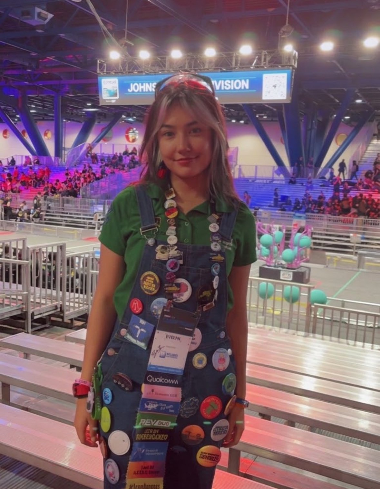

Sobre mí
Soy una estudiante apasionada por la astronomía, la física y la robótica. Soy una atleta de alto rendimiento y me encanta ayudar a las personas.
También me gusta divulgar ciencia y acercarla a más personas.
Mis intereses
🚀 Exploración espacial y astronomía
🤖 Robótica y programación
🥊 Boxeo
✨ Ciencia y divulgación científica
Mi motivación
Me motiva aprender programación porque puedo convertir mis ideas en proyectos reales. Sueño con contribuir a la exploración espacial y demostrar que la curiosidad puede llevarnos muy lejos.